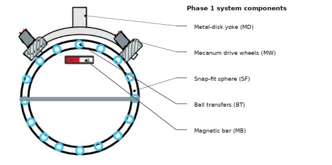

The mission & system concept.
Our mission, engineering concept, and key performance objectives.
Reliable, practical omnidirectional mobility.
MCBD 4.0 aims to develop a robust ball drive mechanism that enables vehicles and robots to travel in multiple directions while maintaining traction and stable coupling between the exterior yoke and spherical wheel.
Earlier MCBD iterations faced challenges associated with exterior obstructions, friction, and decoupling. The team's 2026 design addresses these issues through the combination of an improved yoke, Mecanum rollers, internal support, and revised magnetic placement.

An integrated approach to omnidirectional drive
Our selected concept combines a magnetically coupled spherical wheel with a compact external drive system. The five core mechanical and electrical elements are designed to work together to improve mobility, traction, and reliability.
Metal-disk yoke
Curved external structure carries the motors and supports the metal plate used for magnetic coupling.
Mecanum drive wheels
Five-roller wheel designs apply torque to the sphere for multi-directional motion.
Snap-fit spherical wheel
Rigid split-shell design with flexible external belts intended to improve traction.
Internal ball transfers
Low-friction contacts stabilize the internal structure without constraining sphere rotation.
Internal magnet array
Permanent magnets are placed inside the sphere instead of the external yoke.
Electrical and test system
Control electronics and an omni-directional dynamometer support future validation.
Key performance objectives
| Parameter | Design target | Project status |
|---|---|---|
| Sphere diameter | 7 in | CAD configuration |
| Payload capacity | At least 20 kg | Structural simulation complete; system testing planned |
| Wheel slip | Below 10% | Physical testing required |
| Incline | At least 5° | Calculation stage |
| Obstacle traversal | 6 in | Assembly test required |
| Sphere rotational freedom | 360° | Design goal |